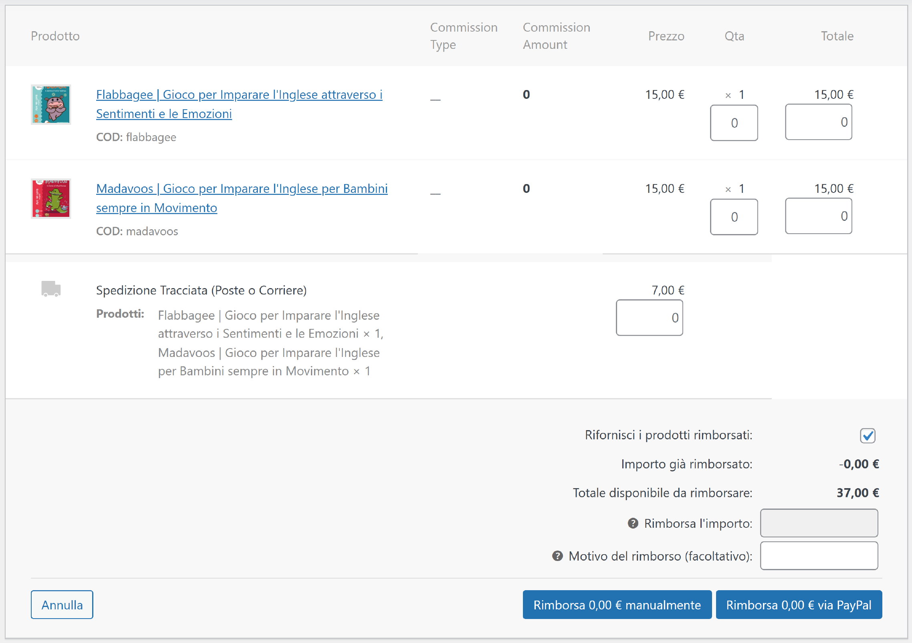
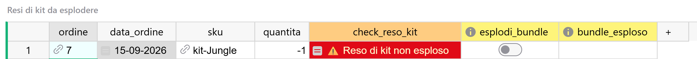
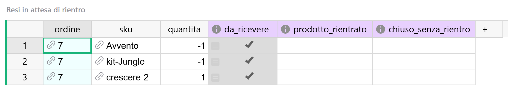

Guida 4
Resi e rimborsi
Versione del 13/09/2026 · Sistema «Magazzino LwM»
Questa è la guida dei rimborsi: cosa succede quando ne registri uno, come si dichiara che fine ha fatto la merce, e come si controlla che non sia rimasto niente in sospeso.
La guida 2 spiega come lavora l'automatismo che scrive i resi. Questa parte da lì e spiega i gesti, che sono pochi ma quasi tutti silenziosi: sbagliarli non produce nessun messaggio d'errore.
§1 In breve
Un reso in questo sistema non cancella niente: aggiunge. Quando rimborsi un cliente su WooCommerce, in Grist nasce un secondo record collegato alla vendita, con le righe in negativo e con la data del giorno del rimborso. La vendita resta dov'era, valida; è la riga negativa a stornarla.
Il sistema fa da solo quasi tutto: crea il record, lo collega, eredita magazzino e dati fiscali, e sui kit aggiunge anche le righe dei pezzi. Quello che non può sapere è una cosa sola, ed è l'unica che decidi tu:
Da quella domanda dipende se il magazzino torna a contare quella copia oppure no. Non dipende dal fatto che la pratica sia chiusa, né da quanto tempo è passato: dipende da dove si trova fisicamente la merce.
| Il gesto | Quando | Dove |
|---|---|---|
| Registrare il rimborso | Quando restituisci i soldi al cliente | Su WooCommerce — sezione 3 |
| Dire che fine ha fatto la merce | Quando lo sai | In Grist, Resi in attesa di rientro — sezioni 4 e 5 |
| La passata di controllo | Una volta al mese, prima della chiusura del periodo | Le tre pagine dei resi — sezione 5 |
Non sono in questa guida: come lavora l'automatismo dei rimborsi (guida 2, sezione 4), come si leggono le giacenze e come si verifica che un numero sia tornato (guida 6), cosa entra nei report fiscali (guida 7).
§2 Cosa succede quando rimborsi
Registri il rimborso sul sito e, di norma entro pochi minuti, in Grist compare un record nuovo.
Cosa nasce:
- un record di tipo Reso, collegato all'ordine di origine;
- con la data del rimborso, non quella della vendita;
- con le righe dei prodotti rimborsati, in negativo;
- con lo stato Rimborsato, sempre;
- con il magazzino e i dati fiscali copiati dalla vendita: non devi riassegnarli.
Una cosa che a schermo confonde e vale la pena sapere subito: nella colonna «ID ordine» di un reso non c'è il numero dell'ordine, ma il numero del rimborso assegnato da WooCommerce. Sono due numeri diversi, ed è corretto così: il legame con la vendita passa dalla colonna dell'ordine di origine, non dal numero.
Cosa non si tocca. L'ordine originale resta esattamente com'era: stesso totale, stesse righe, stesse quantità. Su un rimborso parziale resta anche nello stato Completato, ed è giusto — quella vendita è avvenuta e in parte è ancora buona. Non esiste uno stato "parzialmente rimborsato" e non va inventato.
Dove si leggono i numeri, dopo:
| La domanda | Dove si risponde |
|---|---|
| Quanto ho incassato davvero su quest'ordine? | La colonna del totale netto, sull'ordine di vendita |
| Questo pezzo è stato reso, e quanti ne restano al cliente? | La colonna della quantità netta, sulla riga di vendita |
| Ho la merce fisicamente in magazzino? | Le caselle del rientro, sulla riga di reso — sezione 4 |
12 MARZO — la vendita 20 MAGGIO — il rimborso
───────────────────── ───────────────────────
Ordine #17132 Reso (collegato a #17132)
└─ Libro A +1 └─ Libro A −1
12,30 € −12,30 €
│ │
▼ ▼
┌─────────────────────┐ ┌─────────────────────────┐
│ Conta nei report? │ │ Conta nei report? │
│ SÌ │ │ SÌ, subito │
├─────────────────────┤ ├─────────────────────────┤
│ Ha mosso merce? │ │ Ha mosso merce? │
│ SÌ │ │ solo se dichiari che │
└─────────────────────┘ │ la merce è rientrata │
└─────────────────────────┘
Il 12 marzo resta com'era. Nessun trimestre già consegnato
viene riaperto: lo storno atterra nel giorno in cui è avvenuto.
Perché funziona così — due eventi, non una correzione
La vendita e il rimborso sono due fatti accaduti in due giorni diversi, e il sistema li registra come tali. Se invece di aggiungere una riga negativa il sistema cancellasse la vendita, succederebbero due cose: un rimborso di oggi riscriverebbe un trimestre già consegnato al commercialista, e lo storno verrebbe contato due volte, facendo comparire in magazzino un pezzo che non esiste.
È la ragione per cui una vendita rimborsata resta valida. È la riga negativa a compensarla, e i due numeri insieme danno il netto.
§3 La spunta su WooCommerce
Prima ancora che qualcosa arrivi in Grist, c'è un gesto che decide una giacenza, e lo fai sul sito.
Nella finestra del rimborso, sotto l'importo, c'è la casella «Rifornisci i prodotti rimborsati:». Il sistema la legge e la riporta in Grist come «merce rientrata». Vale in entrambi i modi di rimborsare: che tu faccia restituire i soldi al gestore dei pagamenti o che tu registri un rimborso manuale perché li hai già restituiti per altra via, la finestra è la stessa e la casella sta nello stesso posto.
{kind=link}

La regola è una sola, e conviene impararla in questa forma:
Quello che ne segue, in tutti i casi possibili:
| Al momento del rimborso | Sul sito | Cosa nasce in Grist | Cosa ti resta da fare |
|---|---|---|---|
| 1. La merce è già rientrata | Spunti la casella | Riga di reso già dichiarata rientrata: non compare fra le pendenze, la giacenza risale subito | Niente |
| 2. La merce non è ancora rientrata | Non spunti | Riga di reso in attesa: compare in Resi in attesa di rientro, la giacenza resta scaricata | Si chiude più avanti, in uno dei due modi della sezione 4 |
Il campo «Motivo del rimborso (facoltativo):» finisce anch'esso in Grist, sulla testata del reso. Vale la pena scriverci qualcosa di riconoscibile — copia rovinata, pacco mai arrivato, ripensamento — perché è l'unica traccia del perché, e fra sei mesi è quello che ti dirà come mai quella pendenza è stata chiusa in un modo invece che nell'altro.
§4 Le due caselle di Grist, e la terza strada che le precede
Questa è la sezione più importante della guida.
Sulla riga di un reso ci sono due caselle, prodotto_rientrato e chiuso_senza_rientro. Insieme alla spunta di WooCommerce sono tre modi di ottenere lo stesso effetto visibile — la riga sparisce dalla lista delle pendenze — con conseguenze diverse sui dati. Nessuno dei tre produce un errore se scelto male.
Tre rimborsi dello stesso libro, la settimana scorsa.
Primo. La cliente ti ha rispedito il libro, il pacco è arrivato lunedì e l'hai aperto. Martedì registri il rimborso. La merce è già sul tavolo: spunti la casella su WooCommerce. La riga non passa nemmeno dalle pendenze, la copia torna vendibile.
Secondo. La cliente ti scrive che il libro parte oggi. Rimborsi subito, senza spuntare. La riga ti aspetta in Resi in attesa di rientro. Venerdì il pacco arriva: apri quella riga e accendi prodotto_rientrato. La copia torna vendibile da quel giorno.
Terzo. La cliente ti manda la foto del libro arrivato bagnato. Le dici di tenerlo, non ha senso farselo rispedire. Rimborsi senza spuntare, e quando chiudi la pendenza accendi chiuso_senza_rientro. Quella copia non esiste più: il magazzino non deve mostrarla.
Nei tre casi hai fatto la stessa cosa dal punto di vista della pratica — hai restituito dei soldi e chiuso il discorso — e tre cose diverse dal punto di vista del magazzino. Perché la domanda non è la pratica è finita?, ma dov'è il pezzo adesso?.
| La casella | Cosa dichiara | Effetto sulle giacenze |
|---|---|---|
prodotto_rientrato | La merce è tornata | Riaccredita: quella copia torna disponibile |
chiuso_senza_rientro | La merce non tornerà | Nessuno: la giacenza resta scaricata |
Perché funziona così — chiudere non vuol dire far tornare i conti
L'intuizione tira dalla parte sbagliata: «il reso è chiuso» suona come «tutto a posto», e da lì a pensare che anche il magazzino debba tornare a posto il passo è breve.
Non deve. La merce non c'è. La giacenza scaricata dalla vendita è il numero corretto: quella copia è uscita e non è tornata. La perdita economica è già registrata altrove — il rimborso è uno storno di incasso, non un movimento di magazzino.
E in ogni caso lo storno fiscale resta: un reso entra nei report comunque, che tu abbia dichiarato il rientro, la chiusura senza rientro, o non abbia ancora deciso. Quello che dichiari qui governa soltanto le giacenze. Se rimandi, stai tenendo indietro il magazzino, non il registro.
Dov'è il pezzo adesso?
│
┌─────────────┬───────────┴──────────┬──────────────────┐
│ │ │ │
È già tornato Tornerà, Non tornerà Non lo so
PRIMA che tu ma non è (rotto, perso, ancora
rimborsassi ancora arrivato lasciato
│ │ al cliente) │
▼ ▼ │ ▼
Spunti la Nessuna spunta. ▼ Non spunti
casella su Quando arriva, `chiuso_senza` niente e
WooCommerce `prodotto_rientrato` `_rientro` lasci la riga
│ in Grist in Grist dov'è
▼ ▼ ▼ ▼
giacenza giacenza giacenza giacenza
+1 subito +1 quel giorno invariata invariata
(torni domani)
L'ultimo ramo non è un ripiego: una pendenza aperta è il posto giusto per un reso di cui non sai ancora niente. La lista serve a quello.
§5 La passata sui resi
Una volta al mese, prima di chiudere il periodo, si guardano tre pagine in quest'ordine. L'ordine conta, e il motivo è nella prima.
1 · Resi di kit da esplodere — deve essere vuota
Cosa guarda: i resi di kit a cui mancano le righe dei pezzi.
Va guardata per prima, prima di chiudere qualsiasi pendenza, perché su un reso di kit non esploso la spunta sulla riga del kit non riaccredita niente — il kit non ha giacenza, i pezzi non esistono ancora — e il gesto sembra riuscito. Chiudere le pendenze prima di aver sistemato questa pagina significa spegnere righe senza ottenere nulla.
Se trovi una riga: l'esplosione non è andata a buon fine. Cosa fare è nella sezione 6.
{kind=link}

2 · Resi in attesa di rientro — è la tua lista di lavoro
Cosa guarda: le righe di reso per cui non hai ancora detto che fine ha fatto la merce.
Non è una pagina che deve restare vuota: si riempie e si svuota. Per ogni riga, la domanda della sezione 4 e una delle due caselle.
Cosa questa pagina non mostra, e conviene saperlo:
- i resi per cui hai spuntato la casella su WooCommerce: non ci passano mai;
- le righe dei pezzi di un kit: su un reso di kit vedi solo la riga del kit, ed è quella l'unica su cui la spunta produce un effetto;
- i rimborsi di solo importo senza righe: li sorveglia la pagina successiva.
{kind=link}

3 · Resi senza righe — deve essere vuota
Cosa guarda: i resi che non hanno nessuna riga di prodotto, cioè i rimborsi di solo importo.
Servono a intercettarli perché i report sommano righe, non testate: un reso senza righe ha un totale scritto in chiaro sulla sua testata e vale zero per il Registro Corrispettivi. Cosa farne è nella sezione 7.
Dopo, la verifica che chiude il gesto
Quando dichiari un rientro, il numero deve muoversi. Riapri la pagina Giacenze e controlla che la giacenza di quell'articolo sia salita di quanto ti aspetti. È l'unico controllo che dice davvero che il gesto ha funzionato: la riga che sparisce dalla lista non lo dice.
Quando si smette di aspettare
Alcune pendenze non si chiudono mai da sole: il cliente ha detto che rispedisce e non ha rispedito, il corriere non ha più notizie del pacco. La convenzione è questa: alla passata mensile, una pendenza per cui non c'è più ragione di aspettare si chiude con chiuso_senza_rientro.
Non è una formalità. Una lista che accumula righe morte smette di essere guardata, e a quel punto non segnala più nemmeno quelle vive.
§6 Il reso di un kit
Su un reso di kit il sistema lavora in due tempi: crea il reso con la riga del kit, poi aggiunge le righe dei pezzi in negativo. Il magazzino si muove sui pezzi, mai sul kit.
Per te cambia una cosa sola, e semplifica:
| La riga | Cosa ci fai |
|---|---|
| La riga del kit | È qui che dichiari il rientro, una volta sola, e vale per tutti i pezzi insieme |
| Le righe dei pezzi | Niente. Seguono la riga del kit da sole |
Nella pagina Resi in attesa di rientro le righe dei pezzi non compaiono nemmeno, e altrove le loro caselle del rientro sono grigie: il grigio, in questo documento, vuol dire sempre "non si compila".
Se trovi una riga in Resi di kit da esplodere. I pezzi non sono stati scritti e finché non ci sono non c'è niente da riaccreditare. Si rimedia accendendo a mano la casella dell'esplosione su quella riga (esplodi_bundle): il procedimento è lo stesso di un kit dentro un ordine, ed è nella guida 3, sezione 7. Poi controlla che i pezzi siano comparsi.
Puoi farlo in qualunque ordine rispetto alla spunta del rientro: se avevi già dichiarato il rientro sulla riga del kit, i pezzi nascono già corretti. Quello che conta è che l'esplosione avvenga, non quando.
Se è rientrato solo un pezzo del kit. Non è esprimibile: le caselle sono tutto-o-niente sui componenti, non si può dichiarare che di un kit da tre pezzi ne sono tornati due. Chiudi il reso per quello che è — kit rientrato o kit non rientrato, a seconda di cosa è più vicino al vero — e sistema la differenza con un movimento a parte, di tipo Altri movimenti: la procedura è nella guida 3, sezione 12. Attenzione al segno, che su quel tipo di record non lo controlla nessuno: merce che entra, quantità negativa.
Se la ricetta del kit è cambiata dopo la vendita. È il caso più insidioso di questa guida. Il sistema esplode il reso leggendo la ricetta di oggi, non quella del giorno in cui il kit è stato venduto: se nel frattempo hai sostituito un componente, ti rientra in magazzino un pezzo che non è mai uscito, e non rientra quello che avevi spedito. Nessun controllo lo segnala.
La regola che evita tutto questo è nella guida 5, sezione 11, ed è semplice: un kit che cambia composizione diventa un kit nuovo, con SKU nuovo. Se però la ricetta è già stata modificata e ti arriva il reso di un kit venduto prima, la correzione si fa così: sulla riga del pezzo sbagliato del reso, cambia lo SKU scegliendo quello effettivamente spedito, e non toccare altro. Il rientro continua a comandarsi dalla riga del kit. È lo stesso gesto della sostituzione di un prodotto dentro un kit, spiegato nella guida 3, sezione 9. Comportamento atteso, non ancora verificato sul campo.
§7 Rimborsi che non riguardano merce
Non tutti i rimborsi sono resi di prodotti. Tre casi si somigliano e vanno trattati in modo diverso.
Rimborso di solo importo, senza prodotti. Hai restituito una cifra senza imputarla a nessuna riga — uno sconto tardivo, un disguido. In Grist nasce un reso senza righe: non c'è niente da spuntare, e non comparirà mai fra le pendenze. Lo trovi in Resi senza righe, e va sistemato a mano, perché così com'è non entra nel Registro Corrispettivi: i report sommano righe. La strada, decisa apposta per questo caso, è aggiungere al reso una riga: l'articolo a cui l'importo si riferisce — o quello prevalente, se sono più d'uno — quantità 0, e l'importo del rimborso in negativo. Da quel momento lo storno entra nel Registro alla data del rimborso e il record esce da Resi senza righe. Una conseguenza da mettere in conto: la riga appena creata compare fra le pendenze, perché nessuna formula può sapere che non c'è merce di mezzo. Si chiude con chiuso_senza_rientro, che è esattamente ciò che dichiara.
Rimborso imputato a una riga, con quantità zero. Hai restituito un importo sulla riga di un prodotto senza che tornasse indietro nulla. La riga esiste, vale il suo importo nei report, e compare regolarmente fra le pendenze — perché il sistema non può sapere che non c'è merce di mezzo. Si chiude con chiuso_senza_rientro.
Rimborso che comprende le spese di spedizione. Qui c'è un limite da conoscere:
§8 Il reso di un ordine inserito a mano
Gli ordini che hai inserito tu in Grist non esistono su WooCommerce: nessun automatismo li riguarda, quindi il loro reso lo scrivi tu. Il meccanismo è identico, cambia solo che non c'è nessuna spunta a monte e che la riga nasce sempre come "merce non ancora rientrata", cioè nel percorso 2 della sezione 3.
Si crea come un ordine qualsiasi, dalla maschera Inserimento Ordini (guida 3, sezione 6). Questi sono i campi che contano.
Sulla testata:
| Campo | Cosa ci va |
|---|---|
| «ID ordine» | Non si tocca: si assegna da solo. È un numero della serie riservata agli inserimenti manuali, e cambiarlo rompe cose che non danno errore |
| Data | Il giorno del rimborso, non quello della vendita |
| Tipo di record | Reso |
| Stato | Rimborsato, sempre — anche se l'ordine di origine resta Completato perché il rimborso è parziale |
| Canale | Lo stesso della vendita di origine |
| Magazzino | Quello da cui la merce era uscita. Se lo lasci vuoto, il record resta in Ordini Aperti e i pezzi non rientrano in nessuno dei due magazzini |
| Totale ordine | L'importo rimborsato, in negativo |
| Ordine di origine | La vendita che stai stornando. Non è facoltativo: senza, il netto dell'ordine originale non si muove e il reso resta un record isolato |
| Motivo del reso | Testo libero, ed è l'unica traccia del perché |
| Il campo della fattura | Va messo uguale a quello della vendita che stai stornando — vedi l'avvertenza qui sotto |
Gli ultimi due campi della tabella sono gli unici del riquadro dell'anagrafica che si accendono solo sui resi: fuori di lì sono grigi, perché non vogliono dire niente. Sono stati aggiunti alla maschera il 13/09/2026, proprio perché senza il collegamento all'ordine di origine un reso inserito a mano non sta in piedi.
Sulle righe (riquadro dei prodotti della maschera):
| Campo | Cosa ci va |
|---|---|
| SKU | L'articolo reso. Per un kit, lo SKU del kit: poi accendi la casella dell'esplosione e i pezzi arrivano da soli (guida 3, sezione 7) |
| Quantità | Negativa. Se sbagli segno, la colonna di controllo della riga si accende con un avviso |
| Valori | Negativi anche quelli |
| Rientro | La riga nasce con le caselle spente: la chiudi dopo, come tutte le altre, dalla pagina delle pendenze |
§9 Casi particolari
Sono casi rari. Stanno qui perché quando capitano non c'è nulla che li spieghi a schermo.
Due rimborsi parziali sulla stessa riga. Se hai fatto un primo rimborso parziale con la spunta e poi un secondo sulla stessa riga senza, il secondo reso potrebbe nascere già dichiarato rientrato, perché il dato che il sistema legge da WooCommerce è un conteggio che si somma, non una risposta sul singolo rimborso. Non è stato ancora verificato su un caso reale: comportamento atteso, non ancora verificato sul campo. Nel frattempo, se ti capita, controlla la casella del rientro sul secondo reso prima di considerarlo a posto.
Rimborso annullato sul sito. Se cancelli un rimborso su WooCommerce, in Grist non arriva niente: il reso resta, valido sia per i report sia per le giacenze. È lo stesso motivo per cui non arriva la cancellazione di un ordine. Da verificare; nell'attesa, se ti capita, il reso va sistemato a mano — e in quel caso vale la stessa regola degli ordini: si porta su Annullato, non si cancella (guida 3, sezione 11).
Le due caselle accese insieme. Nulla lo impedisce e nessun controllo lo segnala. Vince il rientro: la giacenza si riaccredita e la riga esce dalla lista. È un comportamento deciso, non un caso da temere, ma se ti accorgi di averle accese entrambe conviene spegnere quella che non volevi.
Articoli che non hanno giacenza. Su un prodotto virtuale — un webinar, un accesso alla piattaforma — o su un kit, la casella del rientro non produce nessun effetto, in nessuno dei due sensi. Non è un guasto: è un gesto che non fa niente, ed è meglio saperlo prima di andarne a cercare l'effetto nelle giacenze.
Le caselle sulle righe dei pezzi di un kit. Fuori dalla pagina delle pendenze — per esempio nella pagina di tutte le righe — le due caselle compaiono anche sulle righe dei pezzi, ma su sfondo grigio. Il grigio è il segnale che quel campo non va compilato: lì non comandano niente, e il rientro di un kit si dichiara una volta sola sulla riga del kit.
§10 Attenzione a
I sei errori che questa guida serve a evitare. Nessuno produce un messaggio di errore.
Spuntare «Rifornisci i prodotti rimborsati:» per abitudine. È l'unico gesto che non lascia nessuna traccia da nessuna parte: se la merce non arriva, in magazzino resta un pezzo che non esiste.
Scegliere la casella in base alla pratica invece che alla merce. «Chiudo perché è tutto sistemato» non è un criterio. Il criterio è dove si trova il pezzo adesso.
Chiudere le pendenze prima di aver guardato Resi di kit da esplodere. Su un kit non esploso la spunta non muove un pezzo e sembra riuscita.
Spuntare le righe dei pezzi di un kit. Non fanno niente. Il rientro si comanda dalla riga del kit, una volta sola.
Lasciare senza magazzino un reso inserito a mano. I pezzi non rientrano in nessuno dei due depositi e il record resta in coda in Ordini Aperti.
Dare per buona una pagina di controllo vuota senza guardare il filtro. Su queste tre pagine il filtro non è bloccato, e una pagina svuotata da un clic ha esattamente lo stesso aspetto di una pagina a posto.
§11 Se qualcosa va storto
| Il sintomo | Cosa guardare |
|---|---|
| Ho rimborsato ma in Grist non è comparso nessun reso | Guida 2, sezione 8: come si vede se l'automatismo ha lavorato |
| Il reso c'è ma non trovo la riga fra le pendenze | Hai spuntato la casella sul sito? Allora è già dichiarata rientrata (sezione 3). Oppure è la riga di un pezzo di kit: guarda la riga del kit |
| Ho spuntato il rientro e la giacenza non è salita | Se è un kit: era esploso? (sezione 6). Se è un prodotto virtuale o un kit: non ha giacenza (sezione 9) |
| La giacenza è salita di più di quanto mi aspettavo | Guida 6, sezione 9: le tre domande, a partire dalla pagina Movimenti di un articolo |
| Ho spuntato la casella sbagliata | Spegnila e accendi l'altra: sono due caselle indipendenti e si correggono in qualunque momento (sezione 4) |
| C'è una riga in Resi di kit da esplodere | Sezione 6 |
| C'è una riga in Resi senza righe | Sezione 7 |
| Il totale netto dell'ordine non è cambiato dopo un reso inserito a mano | Manca il collegamento all'ordine di origine (sezione 8) |
| Un rimborso che avevo annullato sul sito è ancora in Grist | Sezione 9, e guida 9 |
| Non riesci a capire perché un numero è quello che è | Guida 9, con l'elenco di cosa allegare per segnalarlo |
§12 Dove si continua
| Se vuoi… | Guida |
|---|---|
| Capire come lavora l'automatismo che scrive i resi, e quali mail può mandare | 2 |
| Inserire un ordine a mano, annullarne uno, correggere una riga o uno SKU | 3 |
| Trasferire merce, o sistemare un rientro parziale di kit | 3, sezione 12 |
| Creare un kit nuovo quando la composizione cambia | 5, sezione 11 |
| Leggere le giacenze, verificare che un numero sia tornato, contare il magazzino | 6 |
| Capire come i resi entrano nei report fiscali, e cosa resta da chiedere al commercialista | 7 |
| Rimettere a posto un filtro, o esportare una pagina | 8 |
| Capire perché qualcosa non funziona, o cosa segnalare a Paolo | 9 |